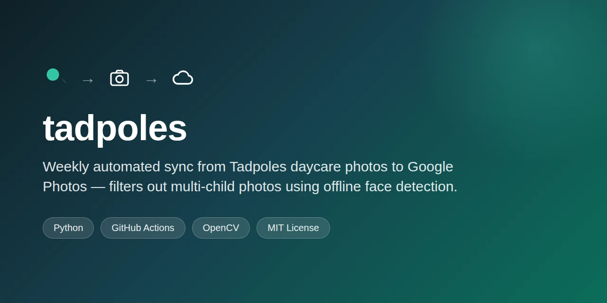

I went from being constantly annoyed by bad software design to solving it myself, shipping a working, tested, automated tool in one evening.

As a product designer, bad UX pains me to my core. I can't unsee or un-experience the sea of mediocre apps and sites I have used. But until recently, I didn't have the time or skill to ship these improvements myself.
My son's daycare posts photos to an app called Tadpoles. Each week I get dozens of photos dumped into a single feed. Tadpoles only lets you download one photo at a time, so I wanted his photos pulled out and saved to my Google Photos automatically, without manual downloading.
Six months ago, this idea would have been a nonstarter. I wouldn't have known where to even begin.
This time I built it. I just started, and the requirements revealed themselves one at a time: an undocumented API, OAuth tokens to manage, a face-detection model to filter out group photos, a weekly cron job, tests to prove the filter worked.
Claude Code wrote the code. I directed it and checked the results against what I actually needed. The final version logs into Tadpoles through an unofficial reverse-engineered API, runs an OpenCV face detector tuned against real test photos, and uploads matches to Google Photos every Sunday with no manual step.
Check it here: github.com/ericjwagner/tadpoles.
I'm not a software engineer (but wish I was). I used to be limited by how much Python I knew (aka none at all). Now, instead of venting to my wife about bad software, I can just fix it myself in a few hours.